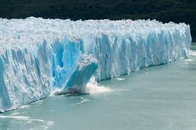
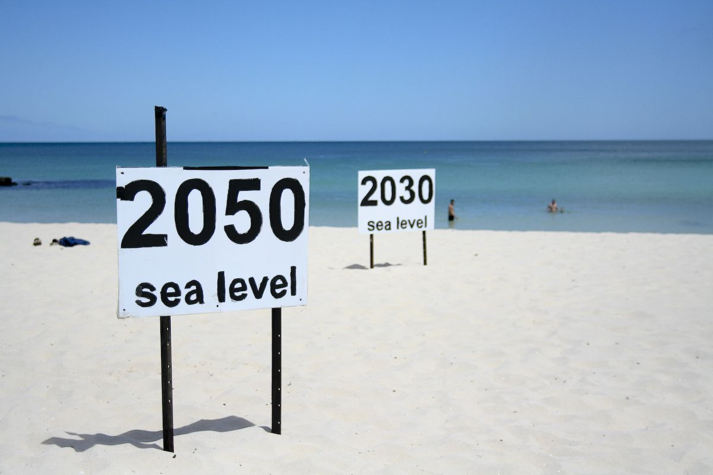
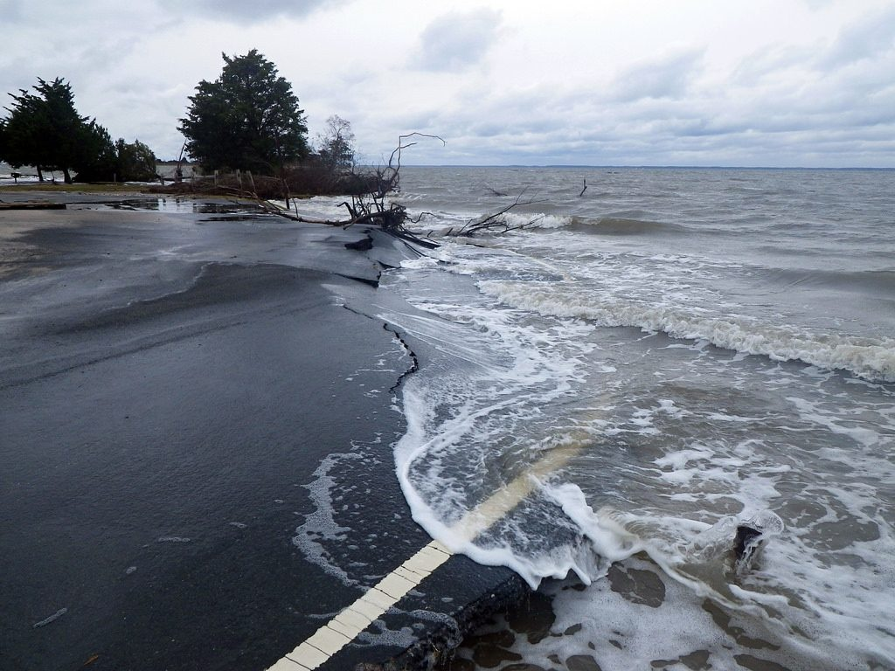
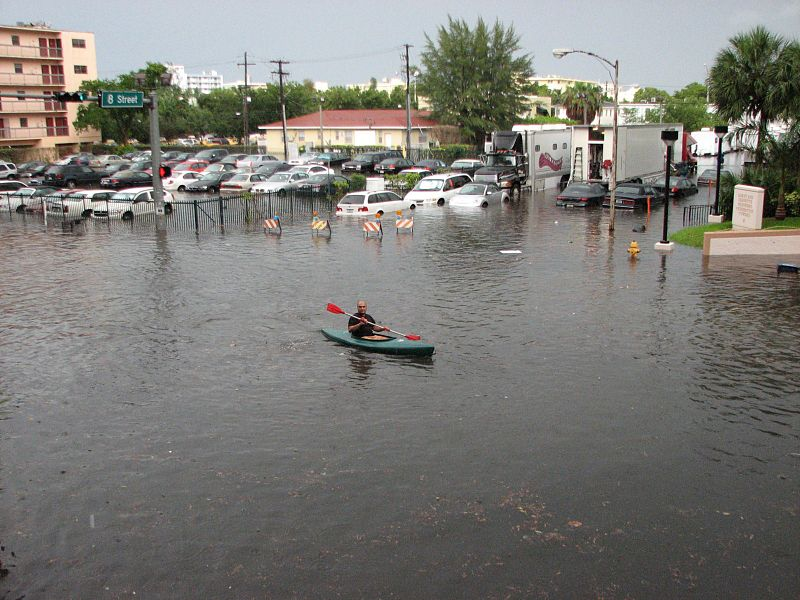

What is Rising Sea Levels
The Ocean is rising, and its rising at a rapid speed. Humans are using so many chemicals and greenhouse gases that it is polluting the oceans. Becuase of this the oceans temperature is getting warmer. The ocean has absorbed more than 90% of the gases and atmospheric het associated with emissions from human activity. Over the past 25 years the sea levels has rised three inches. Sea levels continue to rise about one-eighth of an inch per year.
The Three Primary Factors
There are many reasons as to why this is happening to our oceans. The First reaosn is Thermal expansion. This is when water heats up and expands. Over the last 25 years this has increased, making the ocean occupy more space (rising).The second explaination for rising sea levels is the melting glaciers. The glaciers do melt a little every year, espessially in the summer. The higher the sea levels the more deadly and destructive storms will be. The storms will push further inland and cause more damage. The last, of many reasons of the rising sea levles is Gloabal Warming. Because of Global Warming the glaciers have been melting at a more rapid speed.



